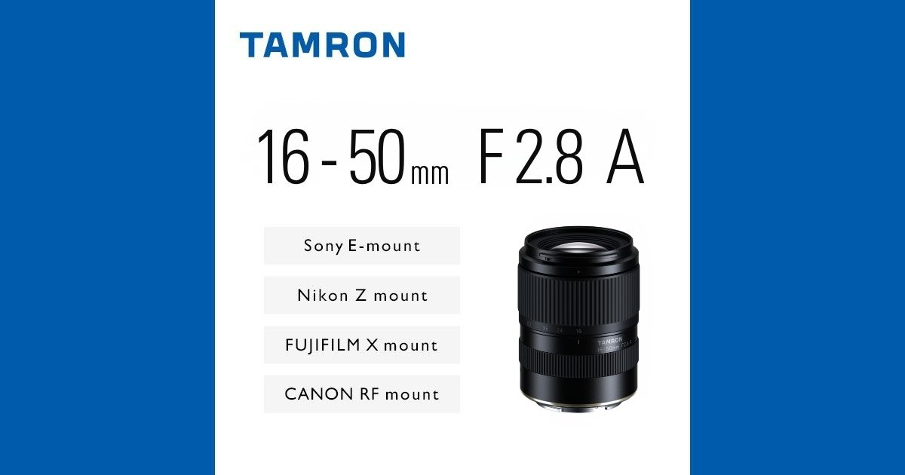

科技產品 T1
Grok Voice 3.0 開放 API，既有 latest 別名自動切換至新模型
發佈時間
xAI／Grok Voice 3.0
新語音模型已可透過Voice Agent API使用，費率維持每分鐘US$0.08；使用grok-voice-latest的應用已自動升級。
- 官方公布每分鐘US$0.08，與前代相同；不是另行販售的新硬體。
- 新模型主打直接語音對語音及低延遲，適用客服等多輪對話。
- 官方引用外部評測與自家部署數據；本站未重跑測試，也不把榜單名次視為所有場景的保證。
完整報告收合報告
事件背景與影響
別名自動切換會直接改變現有客服與語音代理的行為，開發者需要重新驗證任務成功率、延遲及中斷處理。
事件與發佈依據
官方當日宣布API供應，僅日期，不虛構時分。
收錄紀錄
10/01–10/14十四份日報窄查無命中，同窗產品表亦無此次版本。
尚待確認
延遲受網路、工具與任務影響；官方效能宣稱不能直接推定中文客服的實際表現。
相關實體與概念
xAI、Grok Voice、Voice Agent API、模型別名、客服代理
科技產品 T2

B091官方新品圖；各接環上市日期與重量不同。 Tamron Newsroom
Tamron 公布 16–50mm F2.8 A 鏡頭，四種接環分批上市
發佈時間
Tamron／16–50mm F2.8 A、B091
這支APS-C標準變焦鏡維持恆定F2.8，最廣16mm，Sony E版本重305克，提供四大品牌接環。
- Sony E與Canon RF預定10/29上市；Nikon Z為11/19，Fujifilm X為12/17。
- Sony E、Canon RF與Fujifilm X重305克，Nikon Z為315克。
- 採VXD對焦，最近對焦距離廣角端0.15公尺；台灣價格與供應仍需另查當地公告。
完整報告收合報告
事件背景與影響
以較輕鏡身提供大光圈與廣角，讓相機用戶多一個日常攜帶選擇；接環、重量及上市日不能混為一談。
事件與發佈依據
官方B091公告的10/14新產品發布，不將未來供貨誤寫成今日上市。
收錄紀錄
近十四份日報無Tamron B091；同窗表只有不同廠牌Sigma鏡頭，不是同一事件。
尚待確認
305克不是所有版本的共同重量；防滴結構不代表防水，官方未提供此處可核實的台灣售價。
相關實體與概念
Tamron、B091、APS-C、Sony E、Canon RF、Nikon Z、Fujifilm X
科技產品 T3
Fairbuds 2官方配戴圖，非本站實測。 Fairphone
Fairbuds 2 在英歐開賣，保留可換電池並縮小充電盒
發佈時間
Fairphone／Fairbuds 2
第二代可維修真無線耳機採耳柄設計，提供七種可更換零件；英歐已開賣，美國供貨另有時程。
- 英國£99、歐洲€119；媒體稱美國11/2推出，官方美國頁列US$119.99，不把兩種價格寫成完全一致。
- 官方標示11mm單體、LDAC、IP54與最多40小時總續航；續航條件包括關閉降噪。
- 耳機與充電盒電池可更換；同時連接兩台裝置，不代表六台同時播放。
完整報告收合報告
事件背景與影響
電池老化不必直接報廢整副耳機，但維修便利仍須與價格、音質、零件供應及地區保固一起評估。
事件與發佈依據
The Verge首發11:00UTC確認英歐當日供應；不是九月的上市預告。
收錄紀錄
近十四份日報與同窗產品表沒有Fairbuds 2事件，首次收錄正式供應與完整規格。
尚待確認
官方公平／回收材料比例46.8%，媒體寫49%；此處不採後者。台灣通路與保固未確認。
相關實體與概念
Fairphone、Fairbuds 2、可維修設計、LDAC、電池
科技產品 T4
Formlabs 開放訂購 US$699 的 Form Studio 1，十一月開始出貨
發佈時間
Formlabs／Form Studio 1
Form Studio 1把樹脂光固化列印機起價降至US$699，支援第三方樹脂；清洗、固化與排放控制須另作成本規畫。
- 主機US$699起；官方表示10/14可訂、11/16起出貨，Alpha樹脂每公升US$29起。
- 支援Open Material Mode及PreForm工作流程；同次公布手機監看與後處理設備。
- UL GREENGUARD Gold認證以搭配指定Alpha樹脂與VOC Extractor為條件，不能延伸為任意材料均安全。
完整報告收合報告
事件背景與影響
購買門檻降低不等於整套工作流程只要主機價格，也不代表所有樹脂都可安全地在任何室內使用。
事件與發佈依據
官方10/14公告新機可訂購，11/16才開始全球出貨。
收錄紀錄
Formlabs Studio窄查未命中近十四份日報，同窗產品表無本次新機。
尚待確認
WIRED以now on sale描述，官方明訂11/16起出貨；本文分開訂購與交付，不將宣傳成功率當獨立實測。
相關實體與概念
Formlabs、Form Studio 1、MSLA、Alpha Resin、VOC、PreForm
科技產品 T5
OpenAI 公告部分 GPT-4 系列 API 模型將於明年一月停用
發佈時間
OpenAI／GPT-4o、GPT-4o mini、GPT-4.1、GPT-4.1 mini API
官方通知指定GPT-4系列API快照將在2027/1/14移除，並推薦遷移至gpt-6-luna；微調版本跟隨底層模型時程。
- 名單包括GPT-4o的2024-08-06與2024-11-20，以及GPT-4o mini、GPT-4.1與GPT-4.1 mini指定快照。
- 2027/1/14是移除日，10/14是公告日，並非今天立即中斷服務。
- 本文只描述API公告，不推論ChatGPT介面的模型供應同步改變。
完整報告收合報告
事件背景與影響
有固定模型快照的程式需要提早驗證替代方案，不能等到停用日才處理相容性與品質差異。
事件與發佈依據
Deprecations頁10/14新段落，不使用整頁最近更新時間。
收錄紀錄
近十四份日報窄查與同窗產品表無本次GPT-4系列停用公告；不同於10/1其他模型的退場。
尚待確認
替代模型不是逐字等價；各應用需自行驗證工具呼叫、成本及輸出品質，本文不代為修改任何設定。
相關實體與概念
OpenAI API、GPT-4o、GPT-4.1、模型快照、遷移、gpt-6-luna
科技產品 T6
Xbox Nano 控制器開放預購，十一月供應市場包含台灣
發佈時間
Microsoft／Xbox Nano Controller
微軟公布較小的Xbox Nano控制器，美國價US$49.99，內建充電電池與可自訂Action Button。
- 長度略逾五吋、重3.5盎司，保留18個標準遊戲輸入。
- 支援Xbox Wireless與Bluetooth；可自訂按鍵用於截圖或擷取等功能。
- 10/14起預購，十一月供應名單包含台灣，各地售價與供應可能不同。
完整報告收合報告
事件背景與影響
縮小體積讓小手與隨身遊玩多一種選擇，但握持感、按鍵舒適度與跨裝置相容性仍需實測。
事件與發佈依據
Xbox Wire10/14宣布預購，不把十一月供應提前寫成已出貨。
收錄紀錄
Xbox Nano窄查近十四份日報無命中，同窗產品表亦無此控制器。
尚待確認
US$49.99不是台灣建議售價，官方未在此公告確定的台灣出貨日；本站沒有實測。
相關實體與概念
Microsoft、Xbox Nano、遊戲控制器、Bluetooth、Xbox Wireless
全球焦點 1
續報｜荷莫茲海峽貨櫃船 GFS Pride 沉沒，另一受損貨輪也傳進水
發佈時間
航運安全消息人士指新加坡籍GFS Pride已沉沒，海面有漂浮貨櫃；Cape Dao則仍以「據報正在下沉」區分。
- GFS Pride容量2,824 TEU；巴基斯坦水道測量部門10/14發布沉船警告。
- Cape Dao於9/23遇襲，救援未成功後傳出下沉，並非同日新襲擊。
- 管理公司未立即回覆Reuters；船隻損失不等於整條海峽已被物理封死。
完整報告收合報告
事件背景與影響
航道風險從船隻受損升至實際沉沒，可能提高保險與繞航成本，亦影響全球能源及貨物流動。
事件與發佈依據
Reuters由ThePrint於10/14 18:30IST刊載，巴基斯坦航行警告同日確認沉船。
收錄紀錄
10/12曾收錄重開海峽談判；新增是10/14確認GFS Pride沉沒，不把九月Cape Dao遇襲重列成今日攻擊。
尚待確認
「已沉沒」與「正在下沉」不能合併成兩船均已沉沒；攻擊責任與具體武器仍需獨立調查。
相關實體與概念
GFS Pride、Cape Dao、荷莫茲海峽、IMO、航運安全
全球焦點 2
續報｜烏克蘭指 Starlink 新限速妨礙無人機任務，SpaceX 尚未回應
發佈時間
烏方顧問稱移動終端限制在160公里時速，影響攔截與攻擊無人機；軍方消息人士回報更低速度也斷線。
- 顧問Serhiy Beskrestnov稱軍方未事先接獲警告，部分任務因此受阻。
- 烏方正聯絡SpaceX、美國及北約要求釐清；SpaceX未立即回覆Reuters。
- 同日俄軍再打擊能源設施，烏方稱約60萬人停電；這與限速成因需分開判斷。
完整報告收合報告
事件背景與影響
軍事行動對私人衛星網路的依賴，使服務規則與供應商決策成為實際作戰風險。
事件與發佈依據
Reuters10/14 07:19EDT首次刊載，烏方稱當日突遭服務限制。
收錄紀錄
10/13收錄能源設施攻擊與停火爭議；今日新增衛星終端移動速度限制，不把既有情報爭議當同一新事實。
尚待確認
160公里限制是烏方說法，另有較低速度斷線回報；不能據此斷定美國指示或政治動機已被證實。
相關實體與概念
Ukraine、SpaceX、Starlink、Starshield、無人機、衛星通訊
全球焦點 3
美國九月 CPI 年增百分之三點七，核心通膨也升溫
發佈時間
美國九月CPI月增0.6%、年增3.7%，高於八月的3.4%；核心CPI年增2.6%。
- 整體CPI月增由八月0.4%升至0.6%；汽油是主要推力。
- 排除食品與能源的核心CPI月增0.3%，年增由2.4%升至2.6%。
- CPI與聯準會主要關注的PCE權重不同，不能直接視為同一指標。
完整報告收合報告
事件背景與影響
價格壓力影響家庭購買力與利率討論，但單一月份不足以確定下一次聯準會決策。
事件與發佈依據
Reuters10/14 08:40EDT數據稿；正文指BLS週三公布，不採更新時間或早晨預告稿。
收錄紀錄
近十四份日報無本次九月CPI結果；八月數據不是同一期發布。
尚待確認
BLS直連本次403；以Reuters與MT Newswires交叉核對。Reuters稿頭誤標Oct13、正文與刊載時間為週三10/14，保留此差異，不作投資預測。
相關實體與概念
BLS、CPI、核心通膨、PCE、Federal Reserve
全球焦點 4
北韓宣稱試射兩型潛射巡弋飛彈，實際發射平台仍不明
發佈時間
北韓官媒稱在東部海域測試兩型設計供潛艦使用的巡弋飛彈。
- 官媒將武器稱為戰略性飛彈。
- 報導未說明由真實潛艦或水下測試平台發射。
- 南韓軍方在AP發稿時未立即評論。
完整報告收合報告
事件背景與影響
測試涉及水下嚇阻能力，但官媒宣稱與可獨立驗證的軍事能力須分開。
事件與發佈依據
AP10/14 21:35:58UTC首次可靠報導，北韓稱試射在週三進行。
收錄紀錄
近十四日僅有兩韓地雷爭議，非此次巡弋飛彈測試。
尚待確認
戰略性用語暗示核用途，並不證明此次裝載核彈頭或已具完整部署能力。
相關實體與概念
North Korea、KCNA、潛射巡弋飛彈、核嚇阻
全球焦點 5
美國八州分別起訴 OpenAI，指控 ChatGPT 傷害未成年使用者
發佈時間
八州以消費者保護等法律指控OpenAI對安全性的宣傳與實際風險不符；這些仍是原告指控，尚非法院認定。
- 八州為Iowa、Kansas、Nebraska、West Virginia、Arkansas、Arizona、Idaho與Montana。
- 官員要求安全改善、民事罰款及相關救濟，各州請求與法律基礎不必然相同。
- 新案件與既有聯邦著作權爭議、員工竊聽調查不是同一事件。
完整報告收合報告
事件背景與影響
多州分開訴訟將把聊天機器人的產品設計、兒少保護與廣告責任帶入不同司法程序。
事件與發佈依據
愛荷華檢察長10/14記者會公告，Reuters同日報導八州各自提告。
收錄紀錄
近十四份日報無此次八州新訴訟；既有事故與其他訴訟只作背景。
尚待確認
尚未有實體判決；不能將起訴等同認定產品違法，也不把未讀到的公司回應寫成承認。
相關實體與概念
OpenAI、ChatGPT、兒少安全、消費者保護、州法院
全球焦點 6
ASML 第三季營收達一百一十七億歐元，全年展望提高
發佈時間
ASML公布第三季營收約€117億、淨利約€50億，全年營收預期€440億至€450億。
- 精確營收€116.62億、淨利€49.60億，毛利率57.5%。
- 第四季營收預期€142億至€152億，毛利率約57%。
- Reuters報導公司正尋找擴大產能方式，需求展望並不等於所有訂單已轉為收入。
完整報告收合報告
事件背景與影響
微影設備是先進半導體擴產的關鍵瓶頸；財報反映AI投資正轉成設備需求與供應壓力。
事件與發佈依據
公司GlobeNewswire新聞稿10/14 01:00EDT，與官方投資人頁季度發布日期一致。
收錄紀錄
近十四份日報無此次第三季實際業績，不能與先前AI需求評論混算。
尚待確認
營收與淨利單位皆為歐元；公司展望受產能、交付及政策限制，不是保證結果。
相關實體與概念
ASML、EUV、微影設備、半導體、AI基礎建設
全球焦點 7
中國九月出口年增百分之三十六點三，前三季順差達九千三百八十億美元
發佈時間
九月出口年增36.3%、進口增31%，單月順差US$1,335億；前三季累計順差約US$9,380億。
- 出口增速高於八月25%，半導體與汽車是推力之一。
- 進口同樣加快，不能只以出口增幅推論內需全面復甦。
- 前三季順差是累計值，不能與九月單月順差混用。
完整報告收合報告
事件背景與影響
外需強勁與內需疲弱並存，使貿易平衡、產業競爭與政策協調持續承壓。
事件與發佈依據
AP授權The Journal為10/13 23:11美國山區夏令時間，即10/14 05:11UTC；海關當日公布。
收錄紀錄
10/13曾收錄乘用車銷售與出口；此次為全體貨品九月海關結果，統計範圍不同。
尚待確認
同比基期與AI投資循環影響增幅；不能將貨品貿易順差直接等同整體經常帳或GDP增長。
相關實體與概念
China Customs、出口、進口、貿易順差、半導體、汽車
全球焦點 8
微軟與日本警方協作打擊跨國釣魚服務，停用逾兩萬個帳號
發佈時間
微軟稱依佛羅里達州聯邦法院命令，與Health-ISAC處置YAM Store、CoGUI與Iron Man的網域基礎設施。
- 日本警察廳提供情資，JC3協助將看似分散的案件連結。
- 微軟稱已停用逾20,000個相關帳號，並阻擋逾100,000個冒名或詐欺網域。
- 處置供應商不代表所有下游犯罪人已被逮捕或詐騙訊息將消失。
完整報告收合報告
事件背景與影響
詐騙簡訊背後是可交易的帳號、網站模板與託管服務；打擊供應鏈比單一封鎖簡訊更具結構性。
事件與發佈依據
微軟10/14首次公開本次司法與基礎設施處置；調查起於2025年不是今日才開始。
收錄紀錄
近十四份日報沒有YAM Store、CoGUI此次行動，首次收錄。
尚待確認
數字主要由參與行動的微軟提供；逾十億訊息是業者報導的活動規模，不等於十億名受害者。
相關實體與概念
Microsoft DCU、Japan NPA、JC3、Health-ISAC、YAM Store、CoGUI、Iron Man
全球焦點 9
美國縮短難民身分終止通知回應期，新規則十月十四日生效
發佈時間
DHS新暫行最終規則把特定難民身分終止意向通知的回應期限，由三十天縮至十天。
- 適用DHS認為入境當時不符合難民定義的身分終止程序。
- 規則10/14生效，公眾意見期限為11/13。
- DHS以安全、效率與防詐為理由；IRAP批評時間縮短削弱有效回應機會。
完整報告收合報告
事件背景與影響
縮短蒐證與尋求協助的時間，直接影響受通知者的程序保障；這不是對所有移民身分的一般期限。
事件與發佈依據
Federal Register文件2026-20956當日發布並生效，與10/13預告區分。
收錄紀錄
近十四份日報無此身分終止新規；其他難民與移民事件不視為本次變更。
尚待確認
官方直連存取失敗，已核對全文鏡像與IRAP；個案送達及期限計算另有規定，本文不是法律意見。
相關實體與概念
DHS、USCIS、難民身分、NOIT、程序保障
全球焦點 10
哥斯大黎加啟用可容納五千一百人的 Cacco 高度戒備監獄
發佈時間
哥斯大黎加政府在San Rafael de Alajuela啟用Cacco，位於La Reforma監獄群旁，設計容量5,100人。
- 正式名稱為Centro de Alta Contención contra el Crimen Organizado。
- 建築模式受薩爾瓦多Cecot啟發，但不能直接視為法律制度與拘押政策完全相同。
- 5,100是設計容量，不代表啟用當日已有同樣數量囚犯。
完整報告收合報告
事件背景與影響
中美洲強硬治安模式擴散，新增收容量之外，拘押標準、監督與人權保障仍是成效評估的一部分。
事件與發佈依據
Bloomberg Línea首次metadata10/14 22:16:13UTC，報導週三正式啟用，不採上週預告。
收錄紀錄
近十四份日報無Cacco；此次選取實際啟用，非建築進度回顧。
尚待確認
尚無可據此判定長期治安成效的資料；容量、實際收容與犯罪率變化須分開追蹤。
相關實體與概念
Costa Rica、Cacco、La Reforma、治安、監獄、人權
研究備註
時間、來源與後續追蹤
研究截點 2026-10-15 08:01:40（Asia/Taipei）
研究時間與範圍
研究截點：2026-10-15 08:01:40（Asia/Taipei）。全球新聞：2026-10-14 08:01:40 至 2026-10-15 08:01:40（Asia/Taipei）。科技產品：2026-10-01 08:01:40 至 2026-10-15 08:01:40（Asia/Taipei）。